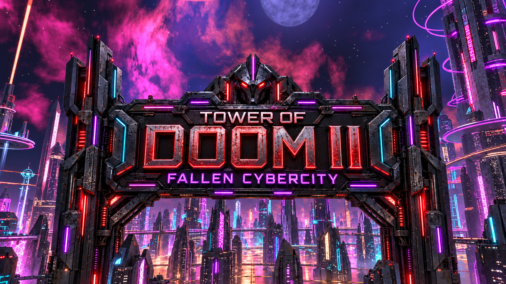
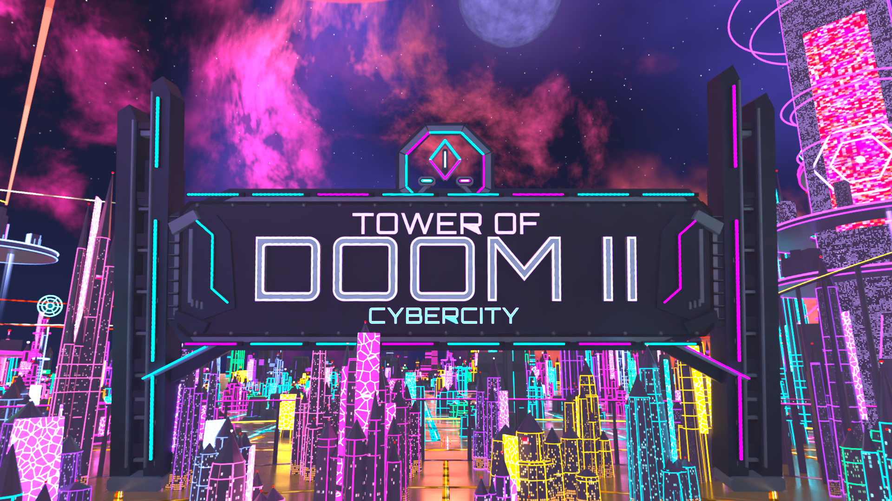

Cybercity: the middle ground
Concept only — not a Blender render or deployed game change. Keep the engineered cyber monument, add imposing mass and worn materials, and carry futuristic building shapes through the ordinary skyline.

Proposed direction. Generated with the built-in image-generation tool from the two saved comparison views. Exact prompt.

Earlier cyber version: the architectural baseline; the user found its title too weak. Current built version: the title moved too far back toward the old haunted gate.
Current built version: the title moved too far back toward the old haunted gate.The new building generator remained in the project, but it covered only 267 of 1,189 retained ordinary buildings. The other 922 retained their older spire treatment. The correction needs broader modern building coverage while preserving the preferred tall landmarks, station clearance and reduced density.
The image above is an art-direction proposal. No source sky, compiled asset, lighting or active match was changed to produce it.